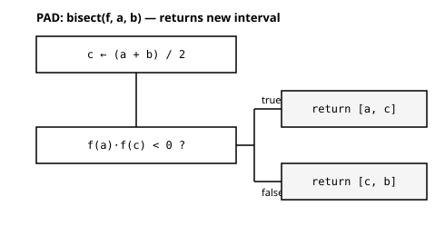
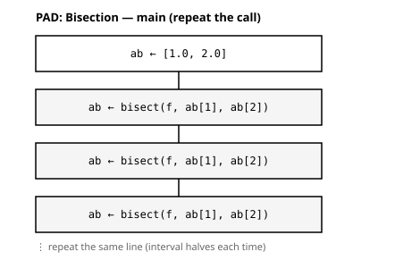

to_fahrenheit(c) = 9/5 * c + 32to_fahrenheit (generic function with 1 method)第6回では，はさみうち（二分法）の 1ステップ を毎回ベタ書きした． 同じ処理を何度も書くのは，書き間違いのもとであり，読みにくい． そこで今回は，その1ステップに 名前をつけて関数に括り出す． キーワードは 「同じ処理を繰り返すなら，名前をつけて関数にする」． あわせて，関数の三要素 引数・戻り値・局所変数 と， 局所変数が関数の外に漏れない スコープ を学ぶ．
g(x) = … のように書くと，式に名前をつける ことができる． これが 関数定義 であり，ここで正式に学ぶ（代入文形式 という）． 左辺の括弧の中は 引数（関数に渡す値の受け口）， 右辺の計算結果が 戻り値（関数が返す値）になる．
まず，身近な式を関数にしてみよう．摂氏から華氏への換算である．
\[ F = \frac{9}{5}C + 32 \]
to_fahrenheit(c) = 9/5 * c + 32to_fahrenheit (generic function with 1 method)to_fahrenheit(0) と to_fahrenheit(100) はいくつか． 水の凝固点と沸点が，華氏では何度だったかを思い出そう．
[to_fahrenheit(0), to_fahrenheit(100), to_fahrenheit(37)]3-element Vector{Float64}:
32.0
212.0
98.600000000000010°C が 32°F，100°C が 212°F，体温 37°C が 98.6°F． 既知の値と一致したから，この関数は正しく書けていると言える（L2検証）． 引数を変えれば，同じ式をいろいろな値で使い回せる．
9/5 を整数の割り算にしない
9/5 は 1.8 だが，整数どうしの商を返す ÷ を使って 9÷5 と書くと 1 になってしまう． to_fahrenheit(100) が 132 のような値になったら，ここを疑う （整数の割り算は第9回でくわしく扱う）．
次に，第6回のはさみうちで根を求めたい関数 \(f(x) = x^2 - 2\) を定義する． この \(f\) は \(x = \sqrt{2}\) で \(0\) になる（\(\sqrt{2} \approx 1.41\)）．
f(x) = x^2 - 2f (generic function with 1 method)f(1.5) はいくつになるか，実行する前に予想してみよう． （\(1.5^2 = 2.25\) なので…）
f(1.5) # sign? magnitude?0.25f(2.0) # 2.0^2 - 2 = 2.02.0f(0.0) # 0.0^2 - 2 = -2.0-2.01行の式ではなく，複数行の処理 に名前をつけたいときは， function … end の ブロック形式 を使う．
第6回でベタ書きした「はさみうちの1ステップ」を，関数 bisect に括り出そう． 区間 \([a, b]\) の 中点 \(c = (a+b)/2\) を計算し，\(f(c)\) の符号を見て， 根を含む 新しい半分の区間 を選んで返す．
function bisect(f, a, b)
c = (a + b) / 2 # c is a local variable (does not leak outside)
if f(a) * f(c) < 0
return [a, c] # signs differ on [a, c] -> root in left half [a, c]
else
return [c, b] # otherwise root in right half [c, b]
end
endbisect (generic function with 1 method)return と戻り値
return は「ここで関数を終え，この値を返す」という命令である． f(a) * f(c) < 0 が成り立てば [a, c] を返してそこで終了し， そうでなければ else 側の [c, b] を返す． return した値が戻り値 になる．
ここで bisect は，根を求めたい関数 f を 引数として受け取る （さきほど定義した f(x) = x^2 - 2 を渡す）． 受け取った f を使って，内部で f(a) と f(c) を計算している．
この関数の構造を図にすると 図 1 のようになる．

bisect(f, a, b) の構造（PAD）．中点 \(c\) を求め，\(f(a)\cdot f(c)\) の符号で新区間を選び，2要素ベクトル [a, c]／[c, b] を分岐の中で return する．
区間 \([1.0, 2.0]\) から始める．この区間には \(\sqrt{2} \approx 1.41\) が含まれている （\(f(1.0) = -1.0 < 0\)，\(f(2.0) = 2.0 > 0\) なので，途中で \(0\) をまたぐ）．
bisect(f, 1.0, 2.0) は何を返すか？ 中点は \(c = 1.5\) である．\(f(1.0)\) と \(f(1.5)\) の符号を考えよう． 返ってくる区間（2要素ベクトル）を予想せよ．
bisect(f, 1.0, 2.0) # which half comes back?2-element Vector{Float64}:
1.0
1.5予想どおり区間 \([1.0, 1.5]\) が返り，幅が半分 になった． そして新しい区間にも \(\sqrt{2} \approx 1.41\) が含まれている．
関数にしたので，同じ1行を繰り返す だけで区間がどんどん狭まる． 返ってきた2要素ベクトル ab の両端 ab[1]，ab[2]（第2回の添字）を， 次の bisect の引数に渡す．
ab = [1.0, 2.0]
ab = bisect(f, ab[1], ab[2]) # 1 step -> interval halved2-element Vector{Float64}:
1.0
1.5ab = bisect(f, ab[1], ab[2]) # halved again2-element Vector{Float64}:
1.25
1.5ab = bisect(f, ab[1], ab[2]) # once more
ab = bisect(f, ab[1], ab[2])
ab = bisect(f, ab[1], ab[2])2-element Vector{Float64}:
1.40625
1.4375区間はどんどん狭まり，\(\sqrt{2} \approx 1.41421\) を 挟み込んで いく． 第6回のベタ書きが，関数化によって 同じ1行の繰り返し になった．
メイン側の流れを図にすると 図 2 のようになる．

ab を初期化し，同じ1行 ab = bisect(f, ab[1], ab[2]) を繰り返すだけで区間が半分ずつ狭まる（網掛けが関数呼び出し）．
bisect の中で使った c は 局所変数 である． 局所変数は 関数の中だけで有効 で，関数の外には影響しない． この「有効範囲」を スコープ という．
これを落とし穴の例で確かめよう．関数の外で c = 999 としておき， bisect を呼んだあと，外の c がどうなるかを見る． bisect の中にも c という名前があるが，それは 別物（関数内の局所の名札）である．
外で c = 999 としてから bisect(f, 1.0, 2.0) を呼ぶと， そのあと外の c はいくつになるか？ （bisect の中では c = (a+b)/2 = 1.5 を計算しているが…）
c = 999
bisect(f, 1.0, 2.0) # inside, c=1.5 is computed
c # did the call change the outer c?999「bisect の中で c = 1.5 を計算したのだから，外の c も 1.5 になるはず」 と考えるのは 誤り である． 関数内の c は 局所変数 なので，外の c（= 999）とは無関係であり， 呼出し後も外の c は 変わらない．
名前が漏れないからこそ，関数は 安心して何度でも使い回せる． もし関数内の c が外の c を書き換えてしまうなら， bisect を呼ぶたびに，外で使っている変数が知らぬ間に壊される恐れがある．
局所変数（スコープ）は，関数の中身を外から切り離して 包み込む（カプセル化）仕組みであり， これは「式に名前をつける」以上の価値である． 第1回の 札モデル と地続きで，関数の中は局所の名札の世界 だと考えればよい．
bisect(f, a, b) は 3つの引数 を受け取る関数として定義した． 引数の数が合わないと，Julia は 一致する定義を見つけられず エラーになる．
bisect(1.0, 2.0) は引数が2つしかないため，MethodError（一致する定義がない）になる．
@errmsg bisect(1.0, 2.0) # only 2 arguments -> MethodErrorMethodError: no method matching bisect(::Float64, ::Float64) The function `bisect` exists, but no method is defined for this combination of argument types. Closest candidates are: bisect(::Any, ::Any, ::Any) @ Main.Notebook ~/Documents/__Class/26w-MSE-prog/memoProgClass2026w-work/ch07.qmd:103
引数は 過不足なく 渡す，という約束（インタフェース）を守る必要がある．
f(x) = x^2 - 2：式に名前をつける＝関数定義．x が 引数，計算結果が 戻り値．function … end：複数行の処理を関数に．return した値が 戻り値．bisect(f, a, b) に括り出し，新区間を 2要素ベクトル [a, c]／[c, b] で返す（判定したい関数 f も引数で渡す）．c は 局所変数．有効範囲（スコープ）は関数の中だけで，外の同名変数に影響しない．bisect(f, 1.0, 1.5) の戻り値を 予測してから 確かめよ（中点は \(c = 1.25\)，\(f(1.25)\) の符号を考える）．ab = [1.0, 2.0] から ab = bisect(f, ab[1], ab[2]) を 6回 繰り返し，区間の幅が \(\sqrt{2}\) をどれだけ細かく挟むか観察せよ．近くの人と話し合う．
座標の並び xs，ys を受け取り，重心（頂点の座標の平均）を2要素ベクトルで返す関数を作るとする．